Why ECO STAR

很多人不是不在乎永續，
而是不知道怎麼開始。
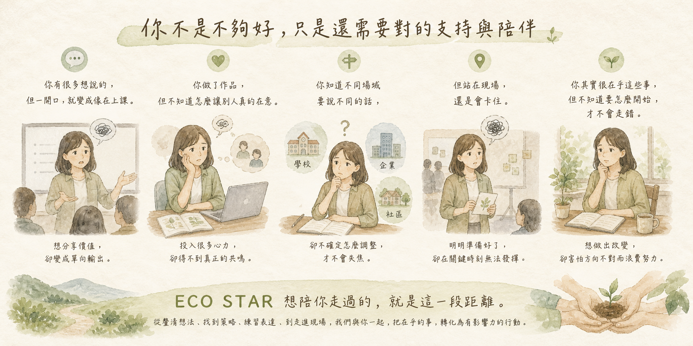
你可能也在這些狀態裡

你可能也在這些狀態裡
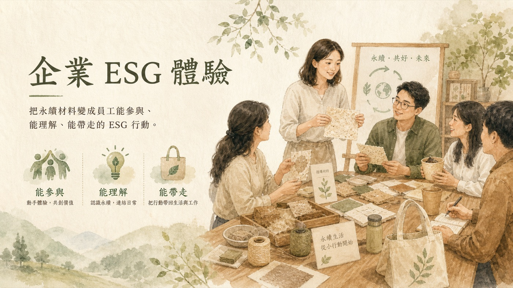
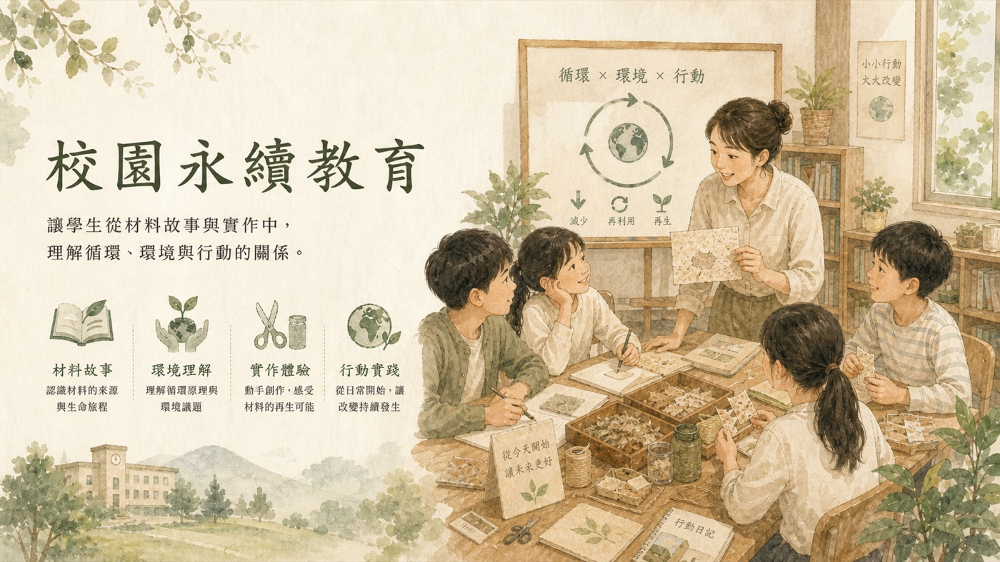
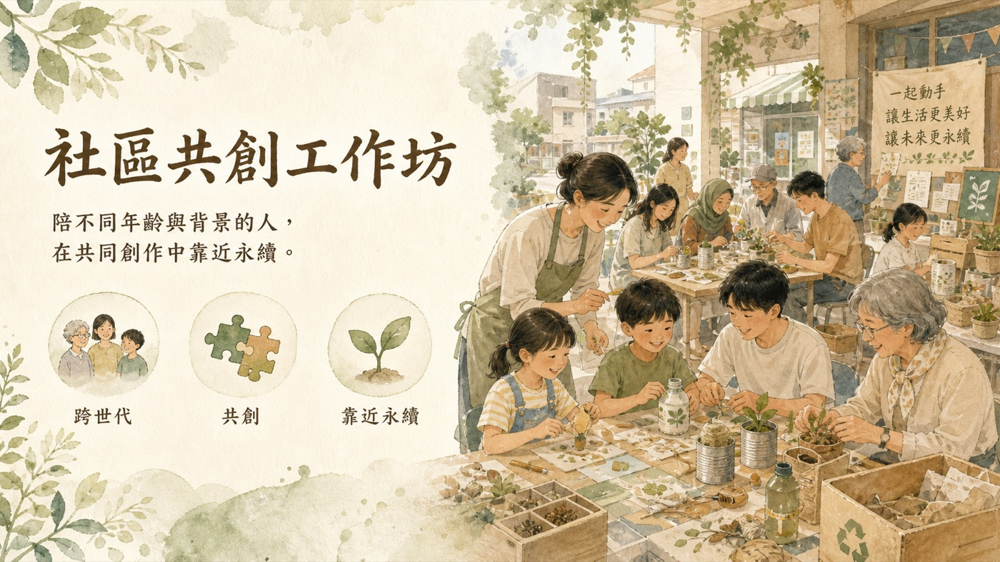
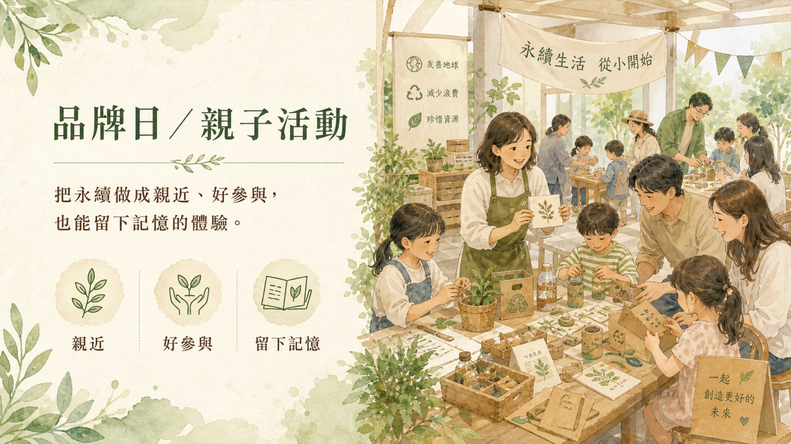
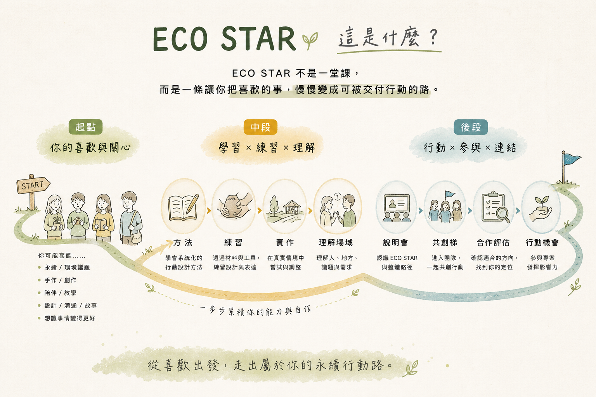
這一段，會陪你看見
ECO STAR 怎麼一步一步發生。
你喜歡永續、手作、陪伴或教學
你關心環境、喜歡創作，也願意陪人一起完成一件事。
這些，就是你靠近永續行動的起點。

看見材料、理解場域、學會設計體驗
一份材料不只是材料——
它可以被說成故事、被設計成體驗，連結到企業、校園與社區的真實需求。

練習帶領、整理流程，建立自己的交付感
一場活動怎麼開始、怎麼引導、怎麼收尾，
你會練習把自己的溫度，放進一套穩定的流程。

站到參與者面前，把材料說成體驗。
你會練習開場、引導與收束，
讓一場永續體驗真的被人感受到。

接下第一張任務卡，開始走進真實場域
完成訓練與實作後，
你會開始走向可以被信任交付的位置。
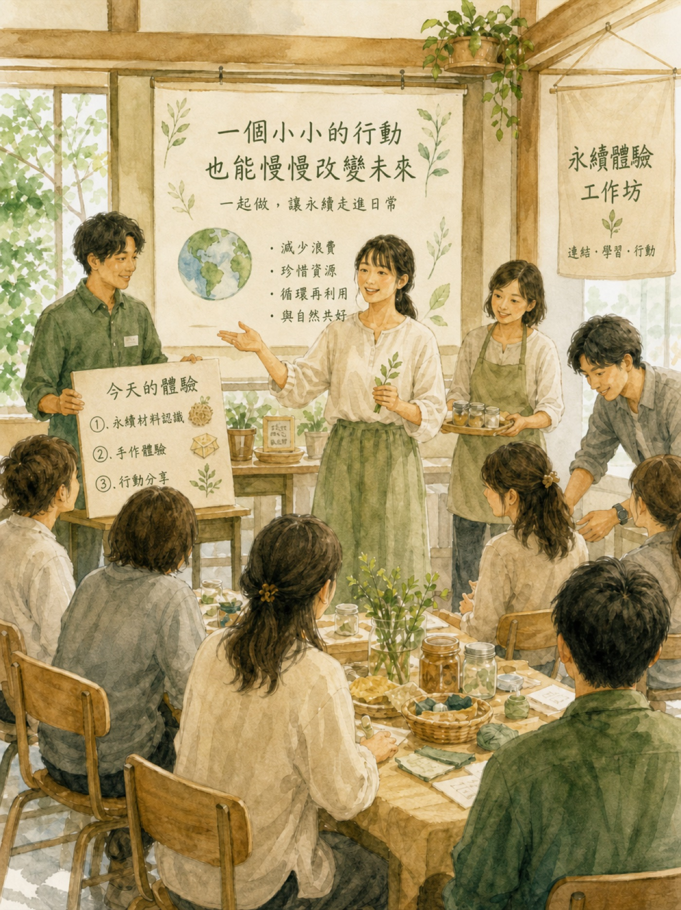
如果你看到這裡，
有一點點覺得「這在講我」，
那你很可能就在這條路上。
如果你是手作老師、教育工作者或活動引導者，
想讓自己的課程多一層永續價值。
如果你喜歡材料、創作與環境議題，
想把這份關心變成可以被實際執行的行動。
如果你一直很擅長陪伴人、整理想法、帶動現場，
也許你已經具備成為永續行動設計師的起點。
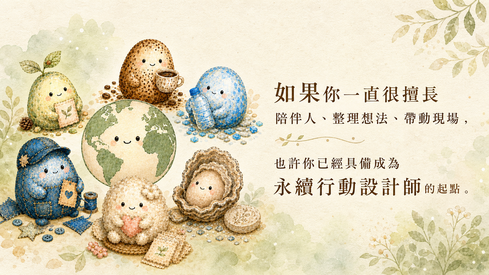

每一步，都是把喜歡慢慢走成行動。
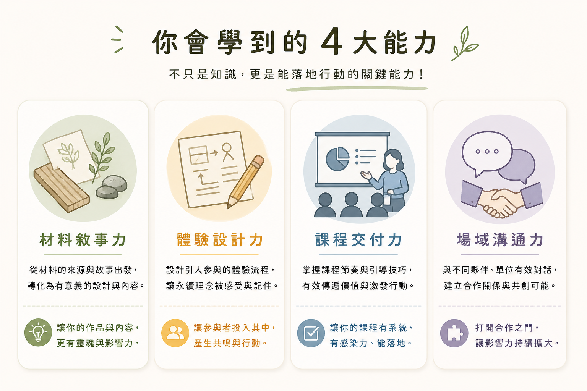
這些能力，不只是學會，
而是真的會用在一個現場裡。
從企業 ESG、品牌日、校園教育到社區活動，
Wishlite 一直在做同一件事：
讓永續被親手感受。
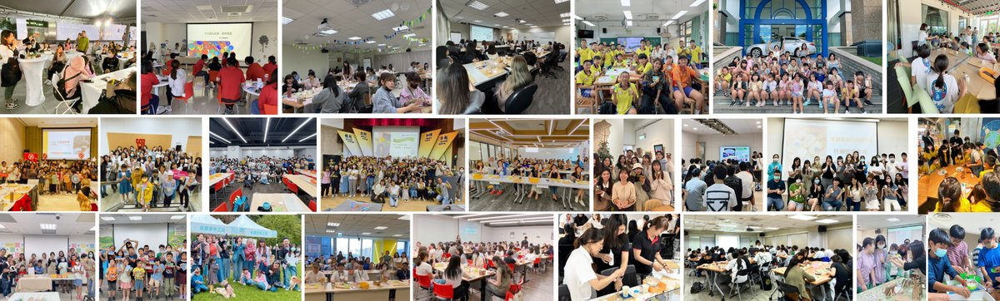
ECO STAR，
就是從這些經驗長出來的。
這不是一堂課，而是一條陪伴你成長的路。
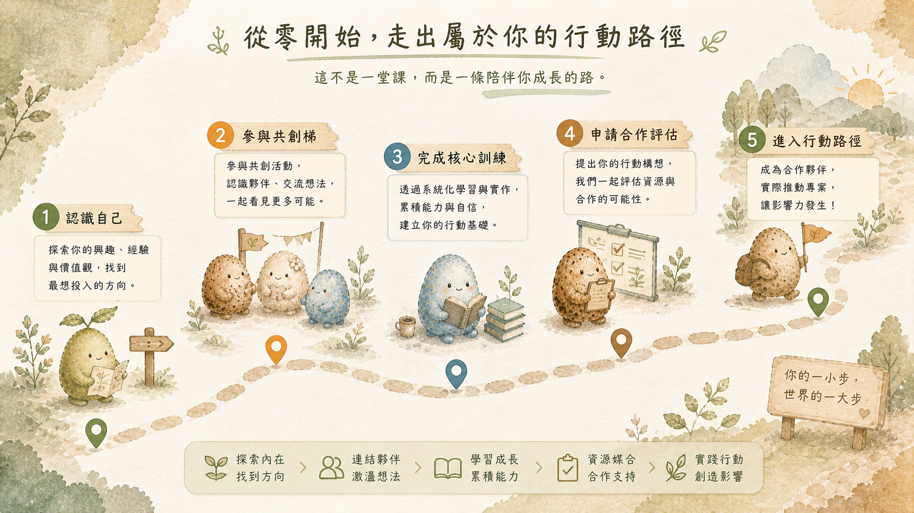
你不需要一開始就準備好，
只要願意靠近，路就會慢慢長出來。
你會在這場說明會裡看見：
你不需要現在就決定要不要加入。
如果你心裡也有一點點想法，
想把喜歡、材料、故事與人連在一起，
也許這一次，
就是你開始的地方。
（已經有一群人，從這裡開始）
填寫資料後，我們會寄送說明會時間與觀看方式給你。